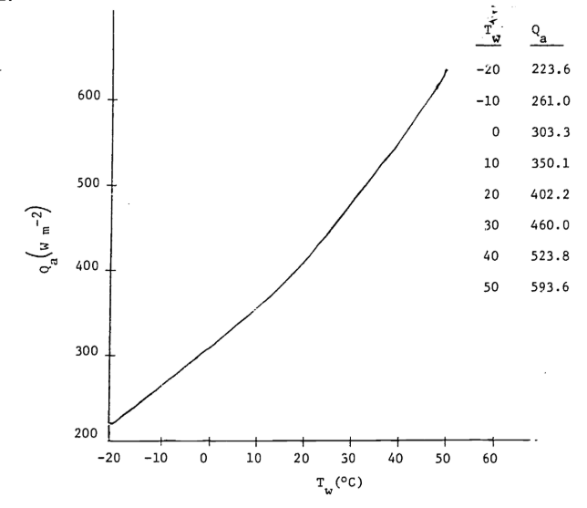
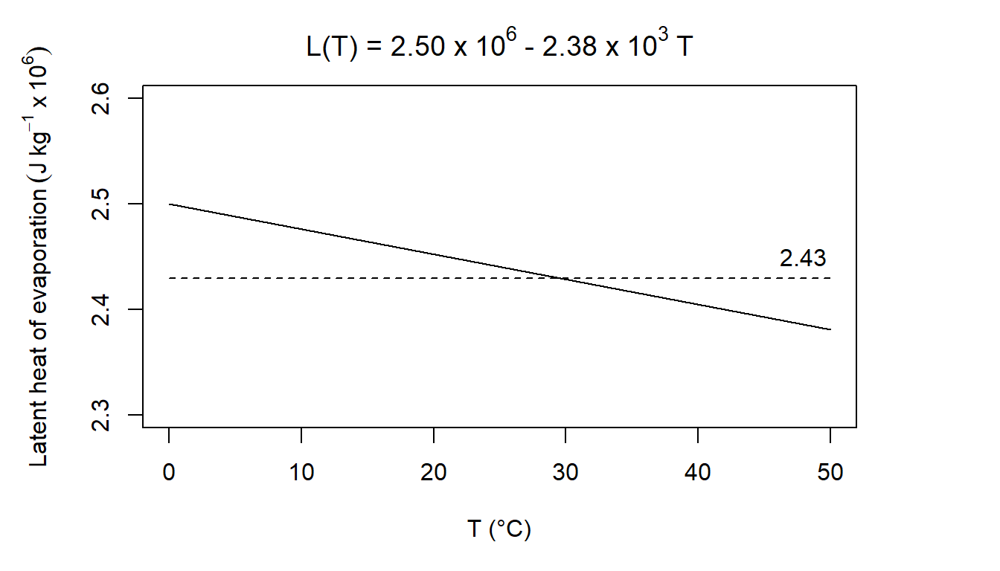

7.7 PROBLEM SOLUTIONS
1

1a. Metabolic heat will increase the wall temperature. The smaller the chamber, the greater this effect will be. The influence will change as the square of the distance.
- The absorptivity is 0.96. Two ways to minimize wall heating are to make the chamber large relative to the animal or immerse the chamber in water. If the emissivity for the metal walled chamber is 0.15 absorptivity will be 0.15. Because the walls will not transmit longwave radiation, 85% will be reflected back to the animal and the other sides of the chamber, again making the chamber feel warmer to the animal than the air or wall temperatures would indicate. Changing the inside surface characteristics of the chamber or increasing the chamber size relative to the animal will reduce the importance of reflected radiation. (See Porter 1969 and Morhardt and Gates 1974 for discussion.)
2a. \(E_f=\lambda^{-2}E_{\lambda}/c_L\). The dimensions of \(E_f\) are \(M L^{-2}\) and of \(E_{\lambda}\) are \(M T^{-1}L^{-3}\). They differ by a factor of \(L^{-1}T^{-1}\). If \(\lambda f=c_L\) and \(n=\lambda^{-1}\) then \(n=f/c_L\). (For plots see data below and the following figures.) Because wavelength is inversely proportional to wave number, equal bandwidths on a wavelength plot will cause unequal bandwidths on a wave number plot. For equal wavelength bandwidths larger wave numbers imply larger bandwidths.
| \(T\) | \(\lambda\) | \(n\) | \(f\) | \(E_\lambda\) | \(E_f\) |
|---|---|---|---|---|---|
| (K) | (m \(\times\) 10-6) | (m-1 \(\times\) 106) | (s-1 \(\times\) 1014) | (J m-3s-1) | (J m-2) |
| 280 | 4.0 | 0.250 | 0.750 | 0.09 \(\times\) 107 | 0.05 \(\times\) 10-12 |
| 5.0 | 0.200 | 0.600 | 0.41 | 0.35 | |
| 6.0 | 0.167 | 0.500 | 0.91 | 1.10 | |
| 7.0 | 0.143 | 0.429 | 1.43 | 2.37 | |
| 8.0 | 0.125 | 0.375 | 1.84 | 3.98 | |
| 9.0 | 0.111 | 0.333 | 2.09 | 5.71 | |
| 10.0 | 0.100 | 0.300 | 2.19 | 7.38 | |
| 11.0 | 0.091 | 0.273 | 2.18 | 8.87 | |
| 12.0 | 0.083 | 0.250 | 2.09 | 10.31 | |
| 13.0 | 0.077 | 0.231 | 1.96 | 11.14 | |
| 15.0 | 0.067 | 0.200 | 1.65 | 12.45 | |
| 17.0 | 0.659 | 0.176 | 1.34 | 13.00 | |
| 20.0 | 0.050 | 0.150 | 0.97 | 12.95 | |
| 30.0 | 0.033 | 0.100 | 0.34 | 10.17 | |
| 40.0 | 0.025 | 0.075 | 0.14 | 7.46 | |
| 60.0 | 0.017 | 0.050 | 0.04 | 4.25 | |
| 100.0 | 0.010 | 0.030 | 1.85 | ||
| 150.0 | 0.007 | 0.020 | 0.90 | ||
| 6000 | 0.15 | 6.66 | 20.00 | 0.06 \(\times\) 1013 | \(\times\) 10-8 |
| 0.20 | 5.00 | 15.00 | 0.73 | 0.10 | |
| 0.25 | 4.00 | 12.00 | 2.63 | 0.55 | |
| 0.30 | 3.33 | 10.00 | 5.22 | 1.57 | |
| 0.35 | 2.86 | 8.57 | 7.57 | 3.09 | |
| 0.40 | 2.50 | 7.50 | 9.15 | 4.88 | |
| 0.45 | 2.22 | 6.67 | 9.91 | 6.69 | |
| 0.50 | 2.00 | 6.00 | 10.00 | 8.33 | |
| 0.55 | 1.82 | 5.46 | 9.65 | 9.73 | |
| 0.60 | 1.67 | 5.00 | 9.03 | 10.83 | |
| 0.65 | 1.54 | 4.62 | 8.28 | 11.66 | |
| 0.70 | 1.43 | 4.29 | 7.50 | 12.24 | |
| 0.80 | 1.25 | 3.75 | 6.01 | 12.81 | |
| 0.90 | 1.11 | 3.33 | 4.74 | 12.82 | |
| 1.00 | 1.00 | 3.00 | 3.75 | 12.48 | |
| 1.25 | 0.80 | 2.40 | 2.11 | 11.00 | |
| 1.50 | 0.67 | 2.00 | 1.25 | 9.37 | |
| 2.00 | 0.50 | 1.50 | 0.51 | 6.73 | |
| 3.00 | 0.33 | 1.00 | 0.13 | 3.77 | |
| 5.00 | 0.2 | 0.60 | 0.02 | 1.62 | |
| 10.00 | 0.10 | 0.30 | 0.46 |
Figure 7.16: Figure for problem 2. Emitted radiation as a function of temperature (T = 280 K)
Figure 7.17: Figure for problem 2. Emitted radiation as a function of temperature (T = 6000 K)
- A frequency or wave number plot has the property that equal areas represent equal amounts of energy which is not true of a wavelength plot. The maximum energy is at \(\lambda \approx 0.85 \times 10^{-6}\) which is in the near infrared of the spectrum, while Fig.7.4 shows \(\lambda_{max}\approx 0.48\times10^{-6}m\).
3a. Equation (7.16) is

\(580 cal\cdot g^{-1} = 2.43\times10^6Jkg^{-1}\).
Body temperature for most homeotherms is above 36 °C. Expelled air will be below body temperature so this seems like a good estimate. If the air was really at 0 °C, the error would be:
\[\frac{2.50-2.43}{2.43}=2.9 \mbox{ percent}\]
At 45°C, the error would be:
\[\frac{2.43-2.40}{2.43}=1.2\mbox{ percent}\]
b. For the moose
\[V_L=0.0567(358)^{1.02}=22.83\frac{\mbox{liters}}{\mbox{breath}}\]
Liters of air per min are:
\[\begin{align*}
R_v&=176.3exp(0.07T_a) \\
R_v&=2.94exp(0.07T_a)m^3\times10^{-3}s^{-1}
\end{align*}\]
Assume that the air is saturated at \(T_b\) = 38°C. We need to calculate the kg of water vapor in a liter of air (\(C_e\), kg m\(^{-3}\)) exhaled at \((T_b + T_a)/2\)
\[C_e=\frac{me(T)}{RT}\]
where
\(m\) is molecular weight of water (18 g mo1\(^{-1}\)),
\(R\) is the gas constant (8.13 J mol\(^{-1}\)K\(^{-1}\)),
\(T\) is temperature (k at \(\frac{T_b-T_a}{2}\)),
and
\(e(T)\) is saturated vapor pressure of water at temperature (T) (mbars).
\[\begin{align*} C_e&=\frac{18g\:mol^{-1}e_s(T)}{8.31kg\:m^2s^{-2}mol^{-1}K^{-1}T} \\ C_e&=\frac{0.217e(T_a+T_b)/2}{(T_b+T_a)/2} \\ \end{align*}\]
The concentration of water vapor inhaled is \[\bigg[\frac{0.217e(T_a)}{T_a}\bigg]r.h.\] \[\begin{align*} LE&=2.43J\:kg^{-1}(C_e-C_i)\cdot R_v \\ &=2.43r.h.\bigg[\frac{0.217e[(T_a+T_b)/2]}{(T_b+T_a)/2}-\frac{.217e(T_a)r.h.}{T_a}\bigg]\times2.94exp(0.07T_a) \\ \end{align*}\]
| °C | kg m-3 | m3 \(\times\) g-1 | W | ||||||
|---|---|---|---|---|---|---|---|---|---|
| \(T_a\) | \(\frac{T_a+T_b}{2}\) | \(C_e\) | \(C_e'\) | \(C_i\) | \((C_e-C_i)\) | \((C_e-C_i)'\) | \(R_v\) | \(LE\) | \(LE'\) |
| -20 | 9 | 0.009 | 0.001 | 0.0005 | 0.0085 | 0.0005 | 0.73 | 15 | 0.9 |
| -10 | 14 | 0.012 | 0.0024 | 0.0012 | 0.0108 | 0.0012 | 1.45 | 38 | 4.2 |
| 0 | 19 | 0.0164 | 0.0048 | 0.0024 | 0.014 | 0.0024 | 2.94 | 100 | 17.1 |
| 10 | 24 | 0.0218 | 0.0096 | 0.0018 | 0.017 | 0.0048 | 5.92 | 244 | 69.1 |
| 20 | 29 | 0.029 | 0.0172 | 0.0086 | 0.0204 | 0.0086 | 11.92 | 591 | 249 |
| 30 | 34 | 0.0375 | 0.0302 | 0.0151 | 0.0224 | 0.0151 | 24.01 | 1307 | 881 |
| 40 | 39 | 0.0485 | 0.051 | 0.0255 | 0.027 | 0.0255 | 48.34 | 3172 | 2996 |
- The conduction transfer during steady state can be calculated according to the following formula: \[G=\frac{kA_c(T_b-T_g)}{\Delta x}\]
| \(T_g\) (°C) \ \(k\) (W m-1 °C-1) | 0.02 | 0.08 | 0.17 |
|---|---|---|---|
| 2 | 3.89 | 15.55 | 33.05 |
| 14 | 1.30 | 5.18 | 11.02 |
| 27 | -1.51 | -6.05 | -12.85 |
- By definition
\[q_1=\frac{k_1}{L_1}(T_1-T_B)\mbox{ and }q_2=\frac{k_2}{L_2}(T_B-T_2)\]
From the First Law of Thermodynamics, we know that \(q_1=q_2\).
Therefore, \(\frac{k_1}{L_1}(T_1-T_B)=\frac{k_2}{L_2}(T_B-T_2)\).
Solving for \(T_B\), we have \[T_1(\frac{k_1}{L_1})+T_2(\frac{k_2}{L_2})=T_B(\frac{k_1}{L_1}+\frac{k_2}{L_2})\] \[T_B=T_1\bigg(\frac{L_2k_1}{L_2k_1+L_1k_2}\bigg)+T_2\bigg(\frac{L_1k_2}{L_2k_1+L_1+L_1k_2}\bigg)\] let \(k_1=ak_2\) and \(L_1=bL_2\), then \[T_B=T_1\bigg(\frac{L_2ak_2}{L_2ak_2+bL_2k_2}\bigg)+T_2\bigg(\frac{bL_2k_2}{L_2ak_2+bL_2k_2}\bigg)\] \[T_B=\frac{L_2k_2}{L_2k_2}\bigg(\big(\frac{T_1a}{a+b}\big)+\big(\frac{T_2b}{a+b}\big)\bigg)=\frac{1}{a+b}(T_1a+T_2b)\] Now let \(\frac{a}{b}=x\) \[T_B=\frac{1}{x+1}(T_1x+T_2)\] Since \(a > 1\), \(k_1>k_2\) so material 1 has the steeper temperature gradient. Because \(x=\frac{a}{b}=\frac{1.2}{0.2}=6.0\), the total temperature drop is greater in material 2. \(T_B=35.7°C\).
A more realistic description of the heat transfer would allow for a slight temperature drop in the soil. Then, in part a, \(T_1=T_g\) and \(T_2=T_b\).
The skin will warm from its initial temperature of 22 °C towards ground temperature. Because heat is leaving the soil there will be a thin layer that cools down from 30 °C. Eventually an equilibrium will be reached and the temperature profile will be constant.
- \(Re\):
| \(D\) \ \(V\) | 0.1 | 2 |
|---|---|---|
| 0.46 | 3239 | 64789 |
| 1002 | 14 | 282 |
\(Nu\): \(Nu = aRe^b\)
| \(D\) \ \(V\) | 0.1 | 2 |
|---|---|---|
| 0.46 | 26.59 | 178.51 |
| 1002 | 2.27 | 8.52 |
\(h_c\): \(h_c = \frac{Nuk}{D}\)
| \(D\) \ \(V\) | 0.1 | 2 |
|---|---|---|
| 0.46 | 1.45 | 9.70 |
| 1002 | 28.38 | 106.5 |
- \(Nu=0.60Re^{0.5}\), \(h_c=\frac{Nuk}{D}\) \[h_c=\frac{k}{D}0.60\bigg(\frac{VD}{v}\bigg)^{0.5}=\frac{0.60}{v^{0.5}}\times k\bigg(\frac{V}{D}\bigg)^{0.5}\] \[h_c=3.98\bigg(\frac{V}{D}\bigg)^{0.5}\] This is approximately 2.3 times the value of \(9.14 J m^2 °C^{-1} s^{-1/2}\) that Gates uses. Most wind speeds in natural environments are less than \(3ms^{-1}\) and most leaves are less than 0.1 m along their largest dimension, thus, Re < 20,000. Leaves usually will not flutter at wind speeds less than \(3 m s^{-1}\). (See figure for Problem 7 on following page.) See Grace (1977) for additional information.
Figure 7.18: Figure for problem 7
- \[\begin{align*} Re^2&=Gr \\ \frac{D^2V^2}{v^2}&=\frac{agD^3(T_s-T)}{v^2} \\ V^2&=agD(T_s-T) \\ V&=0.1895\sqrt{(T_s-T)D} \\ \end{align*}\]
Velocity (m s\(^{-1}\)) as a function of \(T_s-T\) and \(D\)
| \(T_s-T\) (°C) | |||
|---|---|---|---|
| \(D\) (m) | 5 | 10 | 20 |
| 0.3 | 0.232 | 0.328 | 0.568 |
| 0.2 | 0.189 | 0.268 | 0.464 |
| 0.1 | 0.134 | 0.189 | 0.328 |
| 0.05 | 0.095 | 0.134 | 0.232 |
| 0.01 | 0.042 | 0.06 | 0.104 |
Figure 7.19: Curves for which the Reynolds number squared equals the Grasnof number.
From Figures 7.10, 7.11, and 7.12 in the text it is clear that leaf temperature is usually not more than 10 °C above air temperature (although this is a function of leaf size in Fig. 7.12. Leaf size is usually less than 0.05 m and wind speed is below 3 m s\(^{-1}\). There still remains a set of conditions where free convection may be important. For additional information see Tibbals et al. (1964) and Grace (1977).
9a. The degree days DD = 30. This approach assumes: 1) that the high and low air temperatures will represent the average thermal conditions that the fruit experiences; 2) that development is a linear function of the high and low average; and 3) that there is no problem with the fruit overheating. There are undoubtedly other problems also.
- For \(Re=50\) and \(D=0.01m\), \(1.42\times10^{-5}\) \(Re=\frac{DV}{v}\). So \(V=\frac{Rev}{D}=\frac{50\times1.42\times10^{-5}}{0.01}=0.710m/s\)
A comparison of the Nusselt numbers at the same Reynolds number (in the range 50-300) shows that the Nusselt number computed by the first formula is larger. Since the,heat transfer coefficient is proportional to the Nusselt number, the choice of the second formula will give a lower convection coefficient. Choosing the second formula will make the fruit’s temperature depart from air temperature to a greater extent than the first formula. \(Re=\frac{DV}{v}\) so \(Nu=0.34(\frac{DV}{v})^{0.6}\) and \(h_c=\frac{0.34(\frac{DV}{v})^{0.6}}{D}\) Therefore, if \[k=0.025Wm^{-1}K^{-1},\:h_c=6.8V^{0.6}D^{-0.4}\] \(h_c\) for a sphere
| D (m) \ V (m/s) | 0.1 | 1.0 | 10.0 |
|---|---|---|---|
| 0.01 | 10.8 | 42.9 | 170.8 |
| 0.04 | 6.2 | 24.6 | 98.1 |
| 0.1 | 4.3 | 17.1 | 68 |
\(Q_a\) values are in the table below. Because \(a_s\), \(A_l\), \(A_2\), \(A_3\), \(r\) and \(S/s\) are assumed constant, the absorbed shortwave radiation is equal to \(0.245 R_p\).
| Time (hours) | 7 | 8 | 9 | 10 | 11 | 12 | 13 | 14 | 15 | 16 | 17 | 18 |
|---|---|---|---|---|---|---|---|---|---|---|---|---|
| \(O_a\) (Wm-2) | 288 | 431 | 505 | 576 | 626 | 667 | 642 | 604 | 536 | 459 | 305 | 290 |
| \(T_a\) (°C) | 7.5 | 10 | 12 | 15 | 19 | 24 | 27 | 25 | 22 | 16 | 12.5 | 10 |
| \(T_f\) (°C) | 6 | 12.9 | 17 | 21.9 | 26.8 | 32.1 | 33.7 | 30.9 | 26.2 | 18.8 | 10.5 | 8.1 |
For 7 o’clock
\(T_f\) values (°C)
| D (m) \ V (m/s) | 0.1 | 1.0 | 10.0 |
|---|---|---|---|
| 0.01 | 4.6 | 6.6 | 7.2 |
| 0.04 | 3.3 | 6.0 | 7.1 |
| 0.1 | 2.4 | 5.4 | 6.9 |
For 2 o’clock
\(T_f\) values (°C)
| D(m) \ V (m/s) | 0.1 | 1.0 | 10.0 |
|---|---|---|---|
| 0.01 | 38.7 | 29.1 | 25.4 |
| 0.04 | 43.9 | 32.1 | 26.4 |
| 0.1 | 47.3 | 34.8 | 27.4 |
The \(T_f\) values given can be more accurately computed for the conditions given but the estimates of \(R_p\), \(R_a\), \(R_g\) and \(T_a\) do not warrant it. If the absorbed radiation is below that found in a blackbody cavity at air temperature \(T_a\), then decreasing the convection coefficient (decrease \(V\) or increase \(D\)) will increase the difference between \(T_a\) and \(T_f\) making the fruit colder. Conversely if \(Q_a\) is greater than a blackbody level increasing the convection coefficient will bring the fruit closer to air temperature. The problems with this approach are several. Usually the radiation fluxes are much more complex than we have considered because of surrounding vegetation or other fruit. Clumping of fruits will also decrease the convection coefficient. The microclimate on opposite sides of a plant is often different and difficult to specify accurately in small places.
The fruits grow and change color during the season. Smart and Sinclair (1976) have investigated some of these problems as well as the temperature differences within one fruit and non-steady state conditions.
- No solution provided.